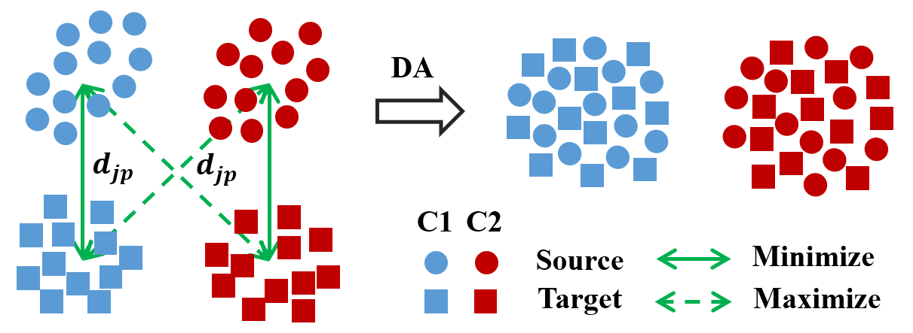

Wen Zhang 张稳
Ph.D. Student (since Fall 2018)
BCI&ML Lab
School of Artificial Intelligence and Automation
Huazhong University of Science and Technology
Wuhan, 430074, China
Email: wenz at hust.edu.cn / wenzn9 at gmail.com


About Myself
I am currently a second year (Sept 2019 - Jun 2020) Ph.D. student in School of Artificial Intelligence and Automation, Huazhong University of Science and Technology (HUST), advised by Prof. Dongrui Wu.
Before that, I received my B.Eng. in Measurement and Control Technology from Wuhan University of Technology in 2018.
My current research interests mainly focus on unsupervised / self-supervised learning, transfer learning and deep representation learning, with their applications to vision and human-machine interface.
News
[04/2020] 1 paper is accepted in IEEE Transactions on Neural Systems and Rehabilitation Engineering, 2020.
[03/2020] 1 paper is accepted in IJCNN, 2020.
Preprints
 |
Wen Zhang, Lingfei Deng, Dongrui Wu, “Overcoming negative transfer: A survey,” in preparation, 2020. [paper] |
Publications
 |
Wen Zhang, Dongrui Wu, “Manifold Embedded Knowledge Transfer for Brain-Computer Interfaces,”
IEEE Trans. on Neural Systems & Rehabilitation Engineering, 28(5), pp. 1117-1127, 2020. [paper] [code] [news|科技导报] |
|  | Wen Zhang, Dongrui Wu, “Discriminative Joint Probability Maximum Mean Discrepancy (DJP-MMD) for Domain Adaptation,”
Int'l Joint Conf. on Neural Networks (IJCNN), Glasgow, UK, July 2020. (Oral) [paper] [code] [news|机器之心] |
Experience
- Huazhong University of Science and Technology, Wuhan, ChinaFeb 2019 - Present
Project principal for the Hubei Technology Innovation Platform Grant 2019AEA171
Advisor: Prof. Dongrui Wu. - Electromechanical Innovation Center of Wuhan University of Technology, Wuhan, ChinaMay 2016 - Sept 2017
Team member for Energy Saving Contest
Mentor: Prof. Jingze Zhao
Awards
Student Grant, IEEE World Congress on Computational Intelligence (WCCI), 2020
3rd Prize, Shenzhen Int'l Competition for Medical and Health Big Data Innovative Application, 2018
3rd Prize, National Univ. Student Science Contest on Energy Saving & Emission Reduction, 2017
National Scholarship, China, 2014, 2015
Skills
Programming: Python, C/C++, Matlab
Deep Learning: PyTorch, TensorFlow, Keras
Professional Activities
Reviewer:
IEEE Symposium Series on Computational Intelligence (IEEE SSCI 2019)
International Conference on Neural Information Processing (ICONIP 2018-2020)